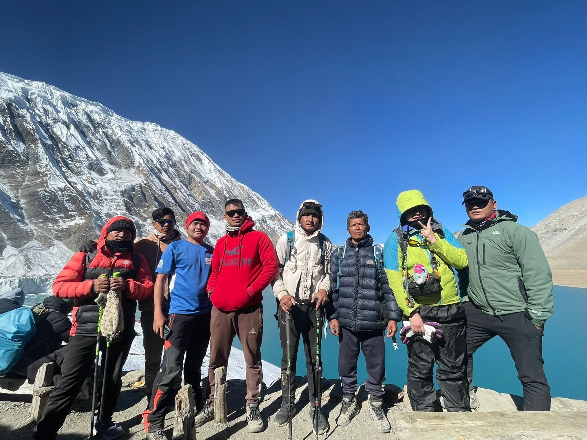
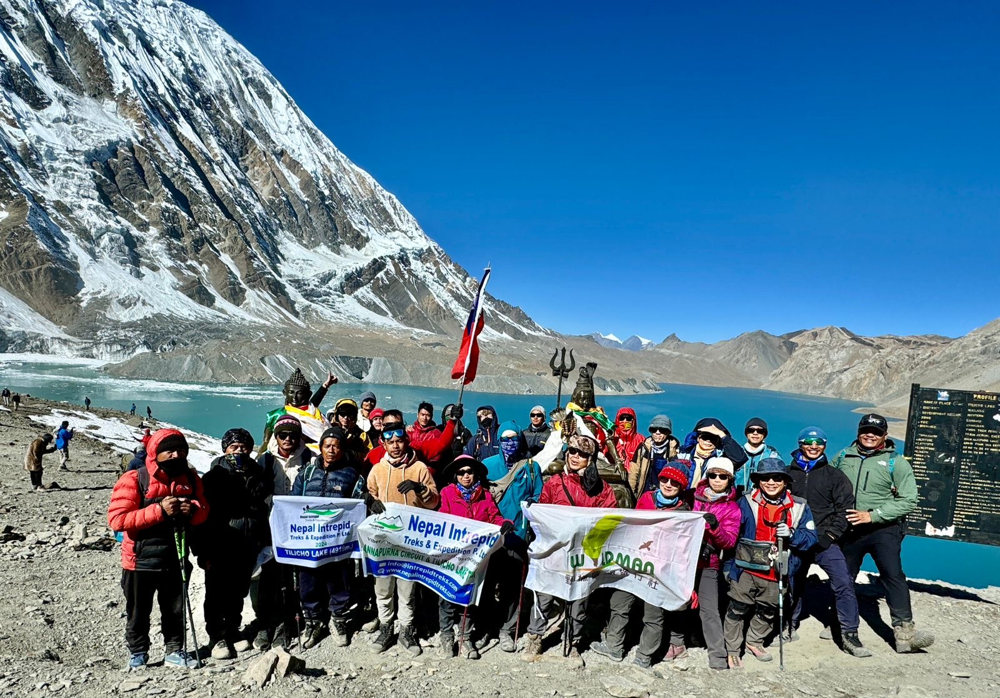
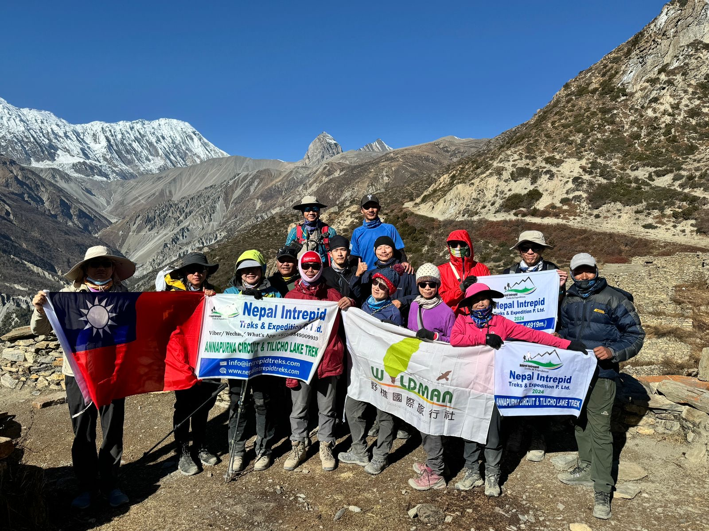

Annapurna Circuit Trek with Tilicho Lake (16 Days)
A legendary 16-day high-altitude journey combining the classic Annapurna Circuit with an unforgettable excursion to turquoise Tilicho Lake (4,919m), crossing Thorong La Pass (5,416m), and scenic flights from Jomsom to Pokhara and Kathmandu.
The Annapurna Circuit with Tilicho Lake Trek weaves two of Nepal's most revered mountain adventures into one continuous 16-day Himalayan voyage. Trek from the lush subtropical valleys of the lower Marsyangdi through traditional Gurung and Tibetan-influenced Manangi settlements, make a dedicated ascent to the turquoise waters of Tilicho Lake (4,919m) under the Annapurna Great Barrier, and conquer the iconic Thorong La Pass at 5,416 meters before descending into the trans-Himalayan desert of Mustang and holy Muktinath.





Annapurna Circuit with Tilicho Lake Trek Overview
The Annapurna Circuit with Tilicho Lake Trek combines two of the most remarkable high-altitude experiences in the Annapurna region into one continuous 16-day Himalayan journey. The route follows the classic Annapurna Circuit through the Marsyangdi Valley, reaches the high mountain settlements around Manang, makes a dedicated excursion toward Tilicho Lake at 4,919 meters, and then continues toward Thorong La at 5,416 meters before descending through Muktinath and the Kali Gandaki Valley.
Unlike a standard Annapurna Circuit itinerary that may pass through Manang and continue directly toward Yak Kharka and Thorong Phedi, this itinerary adds the high-altitude Tilicho section. The additional excursion takes trekkers from Manang toward Khangsar and Tilicho Base Camp before making the ascent to Tilicho Lake, descending to Siri Kharka, and reconnecting with the circuit at Yak Kharka.
The result is a comprehensive trekking experience that combines green lower valleys, subtropical waterfalls, traditional mountain villages, high alpine scree trails, glacial landscapes, turquoise lakes, dry trans-Himalayan valleys, sacred pilgrimage sites, and scenic mountain flights from Jomsom to Pokhara and Kathmandu.
Trip Highlights at a Glance
Route Comparison: Classic Circuit vs. Tilicho Circuit
Complete 16-Day Day-by-Day Itinerary
Detailed route breakdown, walking hours, elevations, authentic trail photography and lodging.
Arrival in Kathmandu

Your Annapurna Circuit with Tilicho Lake Trek begins with your arrival at Tribhuvan International Airport in Kathmandu, located at approximately 1,355 m.
A Namaste Hiking Trek representative receives you at the airport and coordinates your transfer to the hotel. After an international flight, this first day is intentionally kept light so you have time to settle into your accommodation, recover from travel, and prepare for the mountain journey ahead.
Once at the hotel, you can organize your luggage and separate the belongings that will be required during the trek from items that can remain in storage. This is also a useful opportunity to check your trekking boots, clothing layers, personal medication, documents, and other essential equipment.
The evening can include a short group meeting and introduction to the trekking guide and other members of the group. The guide can provide an initial overview of the 16-day journey, including the route through the Marsyangdi Valley, the Manang acclimatization day, Tilicho Lake, Thorong La Pass, Muktinath, and Jomsom.
Travelers can also use the evening to become familiar with the Kathmandu environment. A short walk through Thamel can provide an introduction to the city's restaurants, shops, and trekking atmosphere before the journey moves toward the mountains.
This is not a strenuous day, and no trekking is required. The main objective is to arrive comfortably, organize your preparation, and rest before the long journey toward Jagat the following morning.
Drive from Kathmandu to Jagat via Besisahar
Trek From Jagat to Dharapani

Trek From Dharapani to Chame

Trek From Chame to Pissang

Trek From Upper Pissang to Manang
Manang Exploration and Acclimatization Day

Trek From Manang to Tilicho Base Camp through Khangsar Village

Hike to Tilicho Lake and Return to Tilicho Base Camp, then Trek to Shree Kharka
Trek from Siri Kharka to Yak Kharka

Trek from Yak Kharka to Thorong Phedi

Trek From Thorong Phedi to Muktinath via Thorong-La Pass

Trek From Muktinath to Jomsom

From Jomsom, fly to Pokhara

Fly from Pokhara to Kathmandu
Farewell
Package Inclusions & Exclusions
✓ What's Included in the 16-Day Package
- ✓ Airport Transfers: Private arrival and departure transfers at Kathmandu Tribhuvan International Airport.
- ✓ Kathmandu Hotels: 2 Nights in 3-star standard hotel in Thamel with breakfast.
- ✓ Pokhara Hotel: 1 Night in 3-star lakeside hotel with breakfast.
- ✓ Mountain Teahouses: 12 Nights in mountain lodges (private bathrooms in Manang and Jomsom where available).
- ✓ All Meals on Trek: Full board (13 breakfasts, 12 lunches, 12 dinners) with hot tea or coffee.
- ✓ Domestic Flight 1: Scheduled mountain flight from Jomsom to Pokhara (with 15kg luggage).
- ✓ Domestic Flight 2: Scheduled flight from Pokhara to Kathmandu (with 15kg luggage).
- ✓ Overland Transport: Kathmandu to Jagat via Besisahar by comfortable tourist vehicle / shared private jeep.
- ✓ Lead Guide: Government-certified, English-speaking guide with high-altitude first-aid credentials.
- ✓ Porters: 1 porter for every 2 trekkers (carries up to 20–25 kg total luggage).
- ✓ Staff Coverage: Complete salary, meals, lodging, equipment, and insurance for all staff.
- ✓ Official Permits: Annapurna Conservation Area Project (ACAP) permit and TIMS Card.
- ✓ Medical Safety: Pulse oximeter monitoring daily and comprehensive mountain first-aid medical kit.
- ✓ Duffel Bag: Namaste Hiking Trek water-resistant duffel bag (yours to keep) and route map.
- ✓ Farewell Celebration: Authentic Nepali farewell dinner in Kathmandu with live cultural dance.
- ✓ Taxes: All government taxes, VAT, and official service charges.
✕ What's Excluded
- ✕ International Airfares: Flights to/from Kathmandu and Nepal entry visa fee ($30/15 days, $50/30 days).
- ✕ Travel Insurance: Mandatory policy covering high-altitude emergency medical evacuation and helicopter rescue up to 5,500m.
- ✕ City Lunches & Dinners: Meals in Kathmandu and Pokhara (gives freedom to explore restaurants).
- ✕ Personal Gear: Sleeping bag, down jacket, and trekking poles (rental available in Kathmandu for ~$1.50/day).
- ✕ Teahouse Extras: Hot bucket showers, battery charging ($2–$4), Wi-Fi cards, and boiled drinking water.
- ✕ Beverages: Bottled mineral water, soft drinks, alcoholic beverages, and snacks.
- ✕ Gratuities: Tips for trekking guide, porter, and drivers (customary in Nepal).
Interactive 16-Day Altitude Elevation Profile
Visualizing Kathmandu (1,355m) → Jagat (1,300m) → Manang (3,500m) → Tilicho Lake (4,919m) → Thorong La Pass (5,416m) → Jomsom (2,720m) → Pokhara (822m).
Annapurna Region Seasonal Climates & Weather
Essential Route Guides & Safety Protocols
The Annapurna Circuit with Tilicho Lake Trek combines two of the most celebrated high-altitude journeys in the Nepal Himalaya into one seamless 16-day odyssey. While a standard Annapurna Circuit route passes through Manang and heads directly north toward Yak Kharka and Thorong Phedi, this expanded itinerary incorporates a dedicated multi-day extension southwest into the remote high-glacial basin of Tilicho Lake at 4,919 meters (16,138 ft).
Two Distinct High-Altitude Challenges
The defining feature of this itinerary is that Tilicho Lake is treated as a major high-altitude objective rather than an incidental detour. This creates two distinct physical and logistical tests:
- Tilicho Lake (4,919 m): An excursion away from the circuit into a secluded, vertical glacial cirque. Involves steep switchbacks, exposed scree trail sections, and pre-dawn cold, followed by a descent back to the base camp lodge.
- Thorong La Pass (5,416 m): A sustained, continuous mountain pass crossing requiring an early pre-dawn ascent of nearly 1,000 vertical meters from Thorong Phedi, followed by an immense 1,600-meter descent to Muktinath in the Mustang kingdom.
Because the body has already spent significant time operating at 4,150–4,919 meters during the Tilicho extension, trekkers arrive at Thorong La with superior physiological acclimatization compared to those following a hurried classic 14-day schedule.
Tilicho Lake is one of the highest accessible glacial lakes in the world, sitting at an elevation of 4,919 meters (16,138 ft) in the high mountains of the Manang region. Nestled directly beneath the staggering 7,134-meter north face of Tilicho Peak and the Annapurna Great Barrier, its waters vary from brilliant turquoise to deep cerulean and frozen white depending on the season.
Navigating the Tilicho Landslide Zone
The trail between Siri Kharka and Tilicho Base Camp crosses the famous Tilicho Landslide Zone. This is an awe-inspiring section where the path is cut across immense slopes of eroded shale, moraine, and fine scree. While dramatic and visually breathtaking, safety protocols are strictly observed:
- Single-File Movement: Trekkers walk in single file, maintaining steady spacing and continuous situational awareness.
- Guide Spotters: Our experienced guides position themselves at key vantage points to monitor upper slopes for natural rockfall caused by wind, melting snow, or grazing blue sheep.
- Pacing and Silence: We move steadily without stopping unnecessarily in exposed gullies. Conversation is kept low to ensure warnings from guides can be heard instantly.
- Seasonal Assessment: During periods of heavy rain or spring thaw, morning transits are prioritized before solar warming destabilizes loose shale.
The Day 10 Summit Push to the Lake
On Day 10, the excursion starts at approximately 4:30 AM from Tilicho Base Camp (4,150m). Trekkers climb 769 vertical meters over 5.5 kilometers of steep, winding switchbacks. The morning temperature is frequently below -10°C (14°F), requiring full thermal layering, windproof outer shells, thermal gloves, and headlamps.
After 3 to 4 hours of steady climbing, the immense frozen or turquoise expanse of Tilicho Lake reveals itself. We spend roughly 45 to 60 minutes taking photographs and enjoying hot tea before beginning the return walk. The return descent requires careful knee control, as descending fatigue is a common cause of slips. We return to Base Camp or Siri Kharka for an afternoon of deep recovery.
Thorong La Pass (5,416 m / 17,769 ft) connects the upper Marsyangdi Valley with the Mustang desert and represents the crowning high point of the classic Annapurna Circuit. Crossing the pass safely requires deliberate staging and a conservative acclimatization plan.
Thorong Phedi (4,450m) vs. Thorong High Camp (4,850m)
Our Expedition Protocol: We stage our pre-pass night at Thorong Phedi (4,450m) as our primary recommendation. While sleeping at High Camp saves about an hour on summit morning, the physiological penalty of sleeping 400 meters higher frequently leads to severe altitude headaches, insomnia, and acute mountain sickness. Our prior Tilicho Lake excursion provides ample stamina to conquer the full climb from Phedi in comfort.
Pass Day Timeline
- 03:30 AM: Wake up, warm wash, breakfast (porridge, eggs, hot ginger tea).
- 04:15 AM: Depart Thorong Phedi under headlamps; ascend switchbacks to High Camp.
- 06:00 AM: Reach High Camp as dawn breaks over the Chulu range; short tea pause.
- 06:30–09:00 AM: Ascend the rolling high-altitude glacial valley at a steady, rhythmic cadence.
- 09:15 AM: Arrive at Thorong La Pass (5,416m); prayer flags, summit photos, hot tea at pass teahut.
- 10:00 AM–02:00 PM: Controlled 1,600m descent to Muktinath (3,800m); celebratory lunch and dinner.
Operating above 3,000 meters requires understanding how your body adapts to lower atmospheric pressure. At the summit of Thorong La Pass (5,416m), the effective oxygen available per breath is roughly 50% of what is available at sea level. Without adequate time to acclimatize, this deficit causes Acute Mountain Sickness (AMS), which can progress to life-threatening conditions (HAPE or HACE) if ignored.
Symptoms of Acute Mountain Sickness (AMS)
- Mild AMS: Throbbing frontal headache, mild nausea, loss of appetite, fatigue, dizziness, insomnia.
- Severe Warning Signs (HAPE / HACE): Persistent coughing with pink frothy sputum, severe breathlessness while resting, loss of motor coordination (ataxia / stumbling walk), confusion, extreme lethargy, slurred speech.
The Cardinal Rule of High-Altitude Safety:
Never ascend with symptoms of altitude sickness. If symptoms worsen despite rest, immediate descent to a lower elevation is mandatory and lifesaving. Reaching Tilicho Lake or Thorong La Pass is never more important than trekker safety.
Our Acclimatization Safeguards
- Gradual Overland Progression: We spend 6 full days walking up the Marsyangdi Valley before crossing 3,500m.
- Double Manang Staging: Full acclimatization rest and active hike day on Day 7, plus a post-Tilicho recovery night on Day 11.
- Climb High, Sleep Low: Tilicho Lake (4,919m) is visited as a daytime excursion; sleeping is done 769 meters lower at Base Camp or Siri Kharka.
- Twice-Daily Medical Monitoring: Guides carry digital pulse oximeters to check blood oxygen saturation (SpO2) and resting heart rate every morning and evening.
- Hydration Discipline: Trekkers drink 3.5 to 4 liters of clean water, electrolyte drinks, and warm herbal tea daily.
The Annapurna Circuit with Tilicho Lake Trek is rated Challenging / Strenuous. While it requires no technical climbing skills (no ropes, harnesses, or technical crampons under standard conditions), it demands sustained cardiovascular endurance, leg power for prolonged descents, and mental grit across 20 consecutive days in rugged Himalayan environments.
The 12-Week Progressive Training Schedule
Weeks 1–4: Aerobic Base
- 3x weekly brisk walking or jogging (30–45 mins).
- Stairmaster or hill climbing (20 mins).
- Squats, lunges, and calf raises (2 sets of 15).
- Weekend hike of 2–3 hours on natural terrain.
Weeks 5–8: Volume & Load
- Cardio: 45–60 mins cycling or incline treadmill.
- Wear daypack with 4–6 kg (8–13 lbs) weight.
- Focus on eccentric step-downs for knee longevity.
- Weekend hike: 4–5 hours with 500m+ elevation gain.
Weeks 9–11: Peak Simulation
- Back-to-back hiking days (Saturday 6 hrs, Sunday 5 hrs).
- Full pack weight (6–8 kg / 13–18 lbs).
- Train in actual trekking boots & with trekking poles.
- Practice nutrition and hydration timing while walking.
Week 12: Taper & Rest
- Reduce volume by 50%; light walks only.
- Gentle stretching, foam rolling, and mobility.
- Focus on hydration, clean nutrition, and 8+ hrs sleep.
- Arrive in Kathmandu fresh, energized, and uninjured.
Crucial Training Focus: Downhill Strength
Many hikers train exclusively by walking uphill. However, on Day 14 (Thorong La to Muktinath), you will descend 1,600 vertical meters in a single afternoon! Training your quadriceps and glutes with controlled step-downs, box drops, and downhill outdoor walking is essential to prevent severe knee inflammation (patellofemoral pain syndrome) on the trail.
Because this trek traverses both subtropical valleys and arctic high-altitude passes exceeding 5,400 meters, timing your trek during optimal weather windows is essential for clear mountain vistas, safe pass crossings, and accessible lake trails.
1. Autumn (September to November) — The Peak Season
Autumn is universally regarded as the premier season for the Annapurna Circuit with Tilicho Lake. The summer monsoon washes the atmosphere clean of dust and haze, leaving crystal-clear skies, brilliant blue horizons, and crisp visibility across the Annapurna and Dhaulagiri massifs. Daytime temperatures in lower valleys range from 15°C to 22°C, while nights at Tilicho Base Camp and Thorong Phedi dip to -5°C to -10°C.
2. Spring (March to May) — The Season of Flowers & Warmth
Spring is the second peak trekking window. Lower Marsyangdi and Ghorepani forests come alive with vibrant blooming rhododendrons, magnolias, and orchids. Temperatures are milder and days are longer. Tilicho Lake, often frozen solid in early March, gradually thaws into an awe-inspiring turquoise jewel by late April and May. High passes may have remaining winter snowpacks that require microspikes in March.
3. Winter (December to February) & Monsoon (June to August)
- Winter: Very cold, with temperatures dropping below -20°C at Thorong Phedi. High lodges at Tilicho Base Camp frequently close due to extreme snow, and Thorong La Pass may become impassable. Not recommended for standard groups.
- Monsoon: Lower Marsyangdi and Pokhara areas receive heavy rainfall, bringing leech activity, muddy trails, and landslides along mountain roads. However, the upper Manang and Mustang sections sit within the rain-shadow and remain relatively dry.
Few trekking journeys on the planet encompass the dramatic geographical diversity of the 16-day Annapurna Circuit with Tilicho Lake. Over two weeks, you cross five distinct ecological zones:
- Subtropical Middle Hills (760m–1,800m): Warm, humid river valleys with terraced paddy fields, banana groves, bamboo thickets, and roaring waterfalls in Besisahar, Jagat, and Tal.
- Temperate Forest Zone (1,800m–3,000m): Dense mixed forests of blue pine, hemlock, silver fir, and magnificent rhododendrons around Dharapani and Chame.
- Subalpine Rain-Shadow Zone (3,000m–4,000m): Dry, arid pine and juniper woodlands, carved sandstone canyons, and dramatic open vistas in Upper Pisang and Manang.
- Alpine Glacial Tundra (4,000m–5,000m): Glacial scree, dwarf junipers, permafrost moraines, and sheer amphitheaters surrounding Khangsar, Tilicho Base Camp, and Thorong Phedi.
- Arctic High-Altitude Zone (5,000m+): Eternal snowfields, glaciers, and high wind-scoured ridges atop Thorong La Pass (5,416m).
- Trans-Himalayan Desert (Mustang Plateau): Stark, windswept, ochre-tinted cliffs and deep canyons carved by the Kali Gandaki River in Muktinath, Kagbeni, and Jomsom.
The Annapurna Circuit is home to Nepal's most developed teahouse trekking network. Teahouses are family-run mountain lodges providing clean twin-share bedrooms, home-cooked meals, and communal dining rooms heated in the evenings by central wood- or yak-dung-burning stoves.
What to Expect at High Altitude
In lower settlements like Chame, Manang, and Muktinath, teahouses often offer attached private bathrooms, hot gas showers, Wi-Fi, and extensive menus with Italian pasta, yak burgers, and German bakery treats. However, at extreme outposts like Tilicho Base Camp (4,150m) and Thorong Phedi (4,450m), facilities become basic:
- Rooms feature plywood walls and twin foam beds with quilts; bringing a -15°C rated four-season sleeping bag is strongly recommended.
- Bathrooms are shared squat or western toilets; running water may freeze overnight during cold months.
- Charging devices and hot bucket showers require a small nominal fee ($2–$4 USD) payable directly to the lodge owner.
The Power of Dal Bhat
The staple fuel of the Himalaya is Dal Bhat Tarkari—steamed rice, savory lentil soup, spiced vegetable curry, and pickled greens. Not only is it freshly prepared and hygienically cooked, but teahouses provide unlimited free refills of rice, lentils, and curry! A hearty plate of Dal Bhat guarantees the sustained carbohydrates and protein needed for long days on the trail.
The Annapurna Circuit is as much a profound cultural pilgrimage as a wilderness trek. Along the route, you encounter four distinct Himalayan ethnic cultures, each with unique architectural, linguistic, and spiritual traditions:
- Gurung and Magar Communities (Lower Marsyangdi & Ghorepani): Renowned for their hospitality, animistic-Buddhist traditions, and proud history in the British Gurkha regiments.
- Manangi People (Upper Marsyangdi & Tilicho): Indigenous inhabitants of Manang practicing Tibetan Vajrayana Buddhism. Historic cross-Himalayan traders who built fortified stone towns, cliffside hermitages, and ancient monasteries.
- Thakali Community (Kali Gandaki & Marpha): Renowned throughout Nepal as master innkeepers and traders along the historic Trans-Himalayan Salt Route connecting Tibet to India.
- Sacred Pilgrimage at Muktinath (3,800m): A holy sanctuary where Hindus bathe under 108 sacred bull-head water spouts to attain liberation (Moksha) and Buddhists honor Guru Rinpoche at the miraculous eternal flame of Jwala Mai.
Established in 1986, the Annapurna Conservation Area Project (ACAP) is Nepal's largest protected nature reserve, encompassing 7,629 square kilometers. Its extraordinary elevation gradient—from 760m to 8,091m—nurtures world-class biodiversity.
While trekking, keep your binoculars ready for Himalayan blue sheep (Bharal) grazing on high alpine slopes above Khangsar and Thorong Phedi, golden eagles soaring over mountain passes, bearded vultures (Lammergeier), musk deer, and the elusive snow leopard inhabiting the remote cliffs of Tilicho. Lower forests teem with grey langur monkeys, Himalayan black bears, and over 450 species of birds.
Frequently Asked Questions
The standard Annapurna Circuit typically bypasses Tilicho Lake, heading straight from Manang to Yak Kharka and crossing Thorong La Pass in 14–16 days. The Annapurna Circuit with Tilicho Lake Trek adds a dedicated multi-day excursion from Manang into the high glacial amphitheater of Tilicho Lake (4,919m) before rejoining the circuit. This adds dramatic glacial scenery, an additional high-altitude challenge, superior acclimatization, and extends the journey to 16 comprehensive days.
The Tilicho Lake excursion is physically demanding and rated strenuous. Trekkers climb 769 vertical meters from Tilicho Base Camp (4,150m) to the lake (4,919m) and return the same afternoon, covering approximately 12 km round-trip in 6 to 8 hours. The steep gradient, sub-zero morning temperatures, and thin air require steady pacing, warm layers, and mental focus. However, technical climbing equipment is not required.
The trail crosses fine scree and moraine slopes where erosion occurs naturally. While the path is well-defined and traversed daily by trekkers, porters, and pack animals, it demands care. Our guides position themselves as lookouts, manage group pacing, and ensure trekkers move in a single-file line without stopping in exposed gullies. Walking sticks and good foot placement make this section safe and exhilarating.
The highest point reached is Thorong La Pass at 5,416 meters (17,769 ft) on Day 14. The second highest point is Tilicho Lake at 4,919 meters (16,138 ft) on Day 10.
We prioritize sleeping at Thorong Phedi (~4,450m). While Thorong High Camp (~4,850m) shortens summit morning by an hour, sleeping nearly 5,000 meters high significantly increases the risk of severe AMS, insomnia, and altitude complications. Because our trekkers are already exceptionally acclimatized from Tilicho Lake, the climb from Phedi to the pass is safe, manageable, and far more restful.
Yes, dedicated beginners with strong cardiovascular fitness, good endurance, and a positive mindset can successfully complete this trek. Because this 16-day itinerary features built-in acclimatization days in Manang and gradual elevation gain, your body has ample time to adapt. Previous hiking experience with a loaded daypack is highly recommended.
Two official permits are mandatory: the Annapurna Conservation Area Project (ACAP) Entry Permit and the Trekkers' Information Management System (TIMS) Card. Both permits are completely arranged and included in our package.
The two optimal trekking windows are Autumn (late September to late November) and Spring (March to May). Autumn delivers the clearest skies, crisp mountain vistas, and stable pass conditions. Spring offers warmer daytime weather, colorful blooming rhododendron forests in lower valleys, and thawing turquoise lake waters.
No technical climbing gear (ropes, harnesses, ice axes) is needed under normal trekking conditions. However, a lightweight pair of slip-on microspikes / shoe chains is recommended in early spring or late autumn when compact snow or ice may form on high trail switchbacks near Thorong La Pass or Tilicho Lake.
Our lead guides are certified Wilderness First Responders equipped with pulse oximeters and medical kits. At the first sign of mild AMS, we stop ascent, rest, and hydrate. If symptoms persist or worsen, our strict protocol requires immediate descent to lower elevations (such as descending from Tilicho Base Camp to Khangsar or Manang). In severe emergencies, we coordinate rapid helicopter evacuation with international travel insurers.
You stay in local teahouses (mountain lodges) with twin-bed private rooms. In lower villages, attached bathrooms and hot showers are common. At Tilicho Base Camp and Thorong Phedi, facilities are basic with shared squat/western toilets. Daily meals include hearty Nepali Dal Bhat (lentil soup with rice and veggies), pasta, noodles, potatoes, eggs, momos, porridge, and hot teas.
Yes, Wi-Fi and solar/hydro-electric charging are available in almost all teahouses up to Manang. At Tilicho Base Camp and Thorong Phedi, satellite Wi-Fi (such as Airzed or Everest Link) and solar device charging are available for a small fee ($2–$4 USD). Hot showers are available across most teahouses, utilizing gas geysers or solar heating.
Absolutely! For trekkers with tighter schedules, we can organize private jeep transfers on road-connected sections (e.g. driving directly from Jomsom to Pokhara or flying from Jomsom) to condense the trek to 16–18 days, or customize rest days in Pokhara to suit your party's exact preferences.
Our company strictly adheres to ethical porter guidelines established by the International Porter Protection Group (IPPG). Each porter carries a maximum of 20–22 kg total (divided between two trekkers, or roughly 10–11 kg per client). You will only carry a lightweight daypack (5–7 kg) containing water, camera, rain layers, and personal valuables.